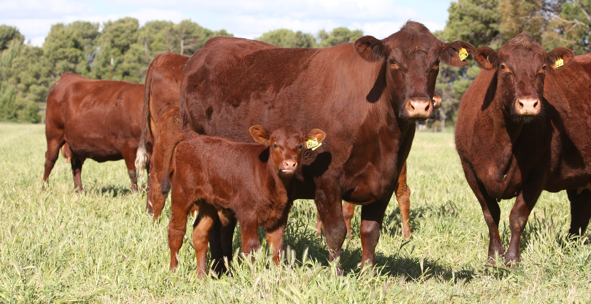
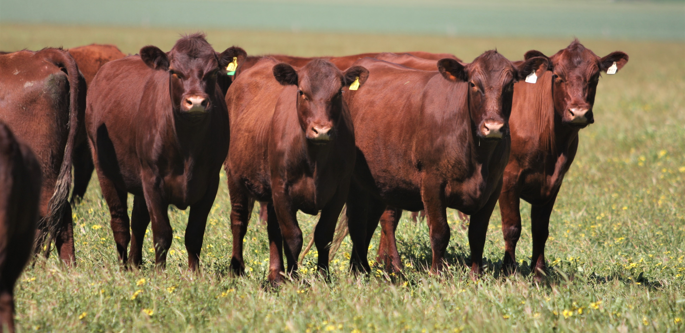
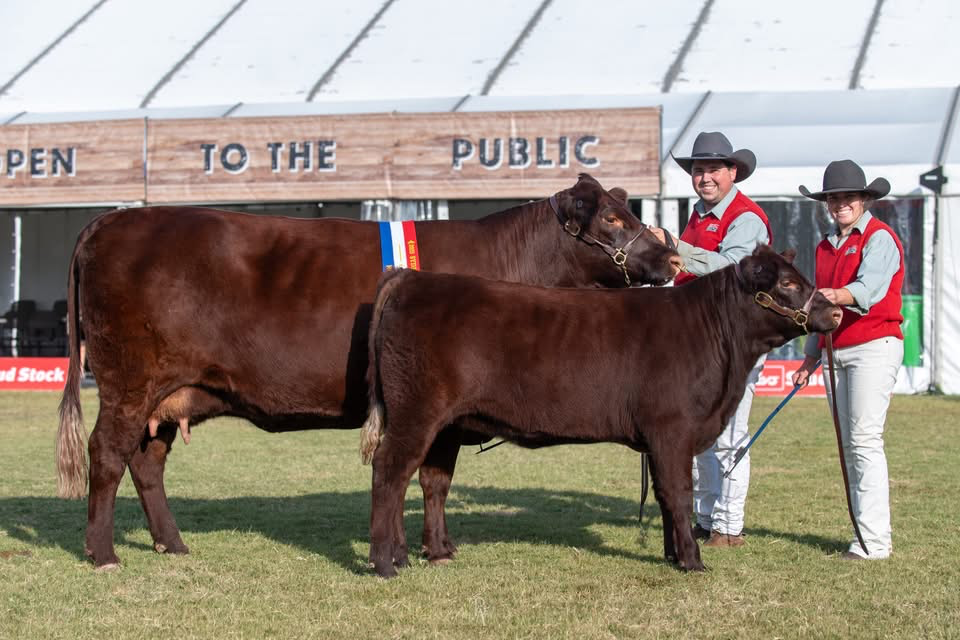
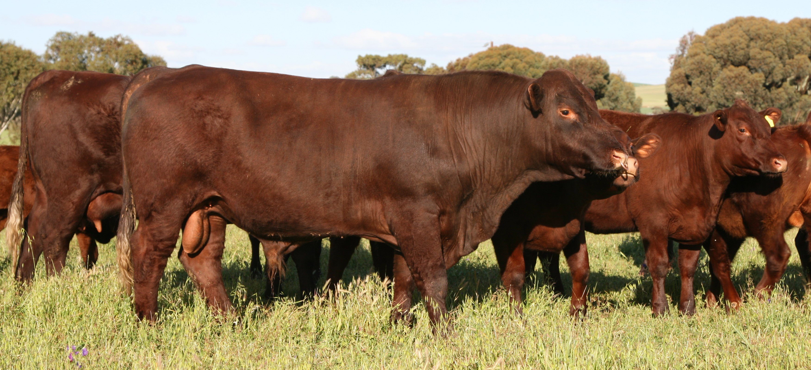
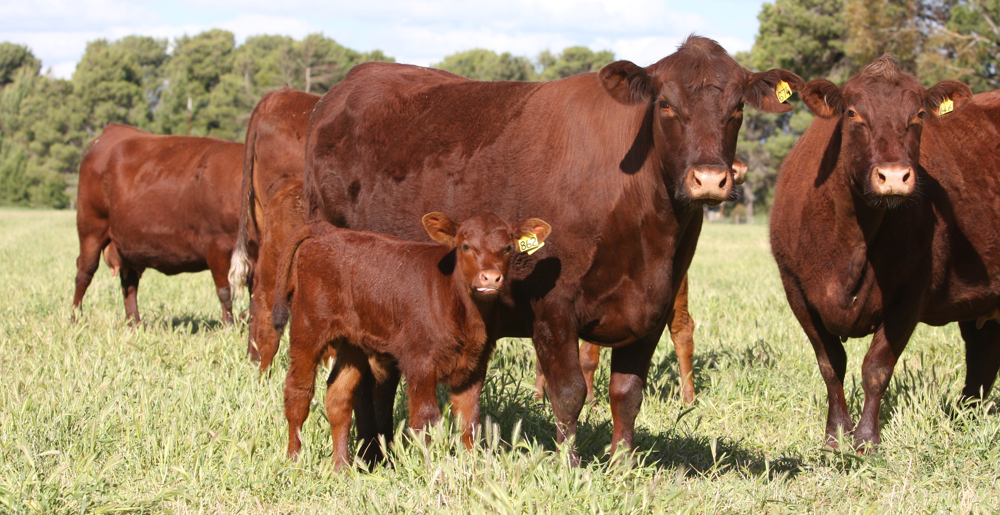
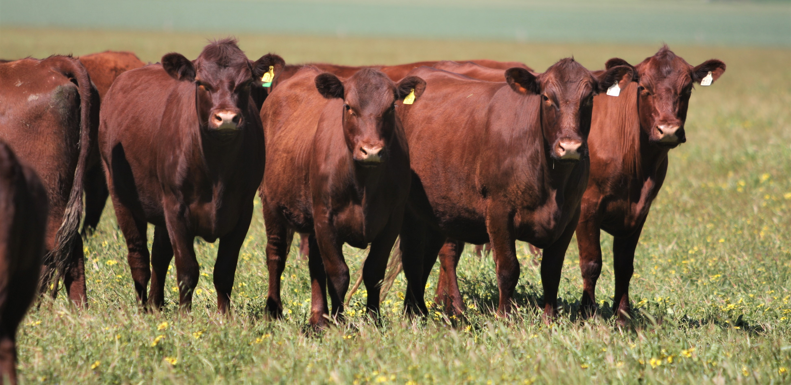
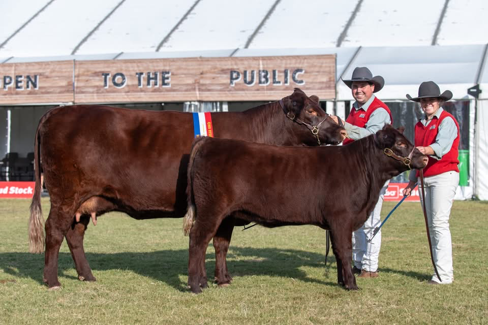
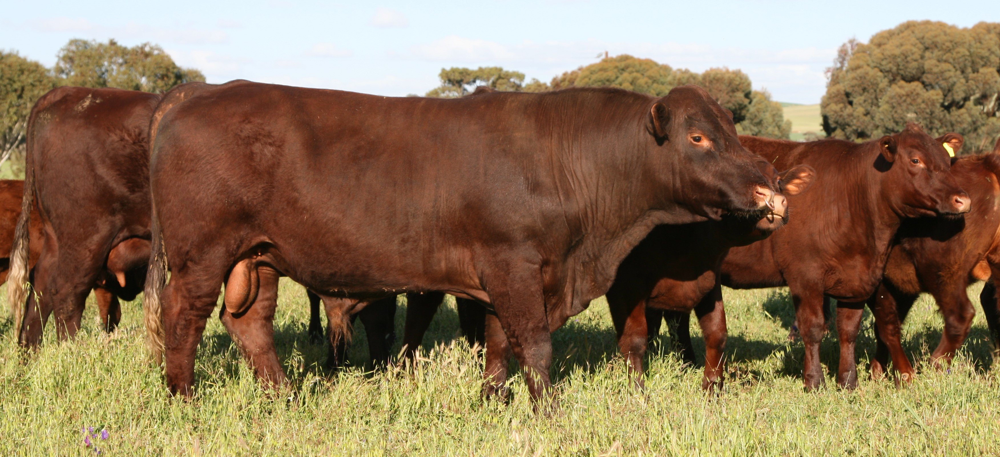

Welcome to Red Poll Australia
Promoting the versatile Red Poll cattle breed for sustainable farming in Australia.
 







Upcoming Events & Annual Magazines
The 2025 Annual is now available. Explore youth camps, regional meetings, and breed promotion events.
View AnnualsEnvironmental, Social & Production Benefits
- Adaptable to harsh conditions with excellent heat resistance
- Docile temperament for easy handling
- High fertility and maternal traits
- Superior eating quality and cross-breeding value
- Supports community events like youth programs
Congratulations Champions
Celebrating the winner of the Cowlishaw Trophy and other standout Red Poll achievements.
View ChampionsSupport the Breed
Help promote Red Poll cattle through donations for events and resources.
Learn MoreAdvertise with Us
Reach breeders and farmers via herdbooks, magazines, and sponsorships.
Advertise Options